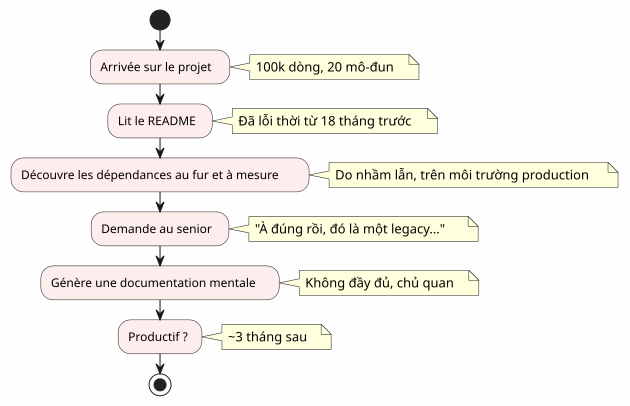
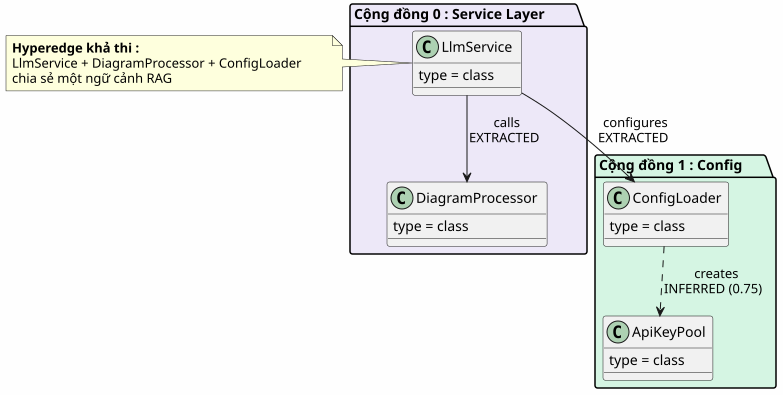
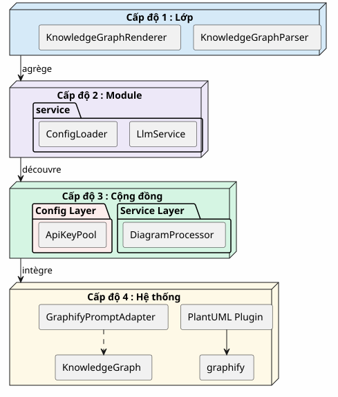
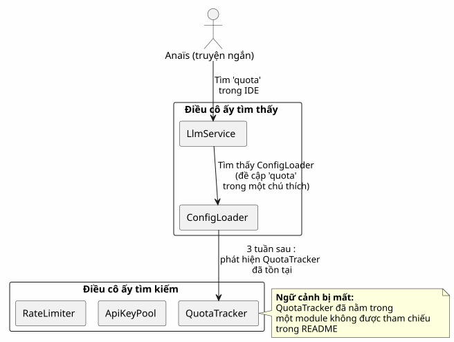
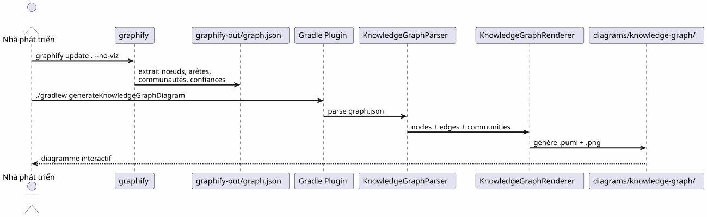
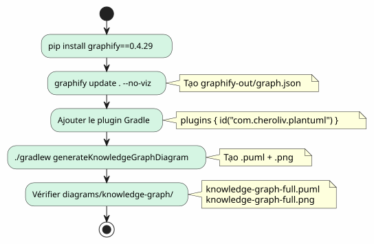
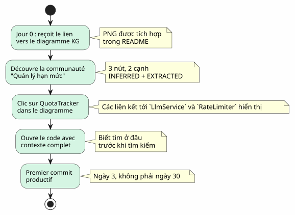

Knowledge Graph như một công cụ hiểu codebase
Đăng ngày 20 April 2027
- Bức tường onboarding
- Knowledge Graph là gì?
- 4 cấp độ thấu hiểu
- Ngữ cảnh bị mất: một kịch bản cụ thể
- Pipeline: từ mã nguồn đến thực đơn chỉ trong một câu lệnh
- Các loại cạnh: những gì mức độ tin cậy cho biết
- 5 phút để tạo Knowledge Graph của riêng bạn
- Giá trị cho onboarding: kịch bản Anaïs đã được xem xét lại
- Giá trị cho điều hướng hàng ngày
- Hạn chế và triển vọng
- Kết luận
Bạn tiếp cận một dự án với 100.000 dòng code. Hai mươi module, một trăm class, những phụ thuộc vô hình, và một lịch sử về những lần refactoring bị lãng quên. Tệp README hứa hẹn một kiến trúc "microservices" nhưng mã nguồn lại kể một câu chuyện khác. Mất bao lâu để bạn có thể làm việc hiệu quả?Ba tháng— nếu bạn may mắn. Và nếu một bản đồ mã tương tác, được tạo tự động, có thể giảm điều đó xuống còn ba ngày thì sao?
- mục lục
-
[]
Bức tường onboarding
Bất kỳ lập trình viên nào cũng từng trải qua tình huống này:
-
Ngày 1: bạn được cho xem README (cập nhật lần cuối: 18 tháng trước)
-
Ngày 3: bạn phát hiện ra rằng mô-đun`billing`gọi bí mật mô-đun`notification`
-
Ngày 7: một senior nói với bạn "À đúng rồi, class này thực ra làm hai việc, bọn tôi đã dự định split nó ra
-
Ngày 14: bạn nhận ra rằng toàn bộ logic nghiệp vụ nằm trong`utils/LegacyHelper.java`— một tệp không được tham chiếu ở bất kỳ đâu

Vấn đề không phải là thiếu tài liệu — mà là cáithiếu thẻ. Một bản đồ hiển thị lãnh thổ thực tế, không phải lãnh thổ tưởng tượng của bản thiết kế lại gần nhất.
Knowledge Graph là gì?
Một Knowledge Graph là một biểu diễn cấu trúc củabiếtnội dung trong codebase của bạn:
| Thực thể | Ví dụ trong mã code | Vai trò trong đồ thị |
|---|---|---|
Nút |
Lớp, hàm, khái niệm |
Đỉnh của đồ thị |
Dừng lại |
Gọi, kế thừa, nhập |
Liên kết giữa hai nút |
Cộng đồng |
Nhóm các lớp liên quan |
Cụm hiển thị trực quan |
Loại cạnh |
ĐƯỢC TRÍCH XUẤT, ĐƯỢC SUY LUẬN, MƠ HỒ |
Sự tin tưởng trong mối quan hệ |
Điểm tin cậy |
0.0 à 1.0 |
Độ tin cậy của một cạnh INFERRED |
Siêu cạnh |
Quan hệ 3+ nút |
Độ phức tạp về kiến trúc |

Điểm khác biệt với một biểu đồ UML đơn giản là gì?Một biểu đồ UML hiển thị những gì lập trình viên quyết định hiển thị. Một Knowledge Graph hiển thị những gì thực sự hiện hữu, bao gồm cả các phụ thuộc ẩn và các khái niệm mới nổi.
4 cấp độ thấu hiểu
Một Knowledge Graph cho phép điều hướng đếnbốn quy môVui lòng cung cấp nội dung cần dịch.

| Mức độ | Câu hỏi | Độ chi tiết | Công cụ |
|---|---|---|---|
1 — Lớp |
Lớp này làm gì? |
Dòng mã |
IDE, trình duyệt |
2 — Mô-đun |
Các tệp của mô-đun này là gì? |
Hồ sơ |
|
3 — Cộng đồng |
Những khái niệm nào hoạt động cùng nhau? |
Nhóm liên kết |
Đồ thị Tri thức |
4 — Hệ thống |
Mọi thứ khớp nối với nhau như thế nào? |
Kiến trúc tổng thể |
Sơ đồ KG đầy đủ |
Nếu không có Knowledge Graph, cấp độ 3 và 4 làkhông thể truy cập— hoặc ít nhất là mang tính chủ quan và lỗi thời.
Ngữ cảnh bị mất: một kịch bản cụ thể
Hãy tưởng tượng một nhà phát triển mới, Anaïs, gia nhập dự án. Cô ấy cần thêm một tính năng "quota tracking" cho các cuộc gọi LLM.

Với một Knowledge Graph, Anaïs sẽ thấy trong5 phútHãy cung cấp văn bản cần dịch.
-
QuotaTracker`có liên kết với`ApiKeyPool(cạnhĐÃ TRÍCH XUẤT) -
RateLimiter`được liên kết với`QuotaTracker(cạnhĐƯỢC SUY LUẬN, độ tin cậy 0.82) -
Ba nút này tạo thành mộtcộng đồngQuản lý hạn mức
-
Một siêu cạnh (hyperedge) cũng kết nối`LlmService`— điểm nhập vào
Pipeline: từ mã nguồn đến thực đơn chỉ trong một câu lệnh
Pipeline Graphify + Plugin Gradle chuyển đổi codebase của bạn thành biểu đồ PlantUML bằnghai lệnhVui lòng cung cấp văn bản cần dịch.

Không LLM.Mọi thứ đều mang tính xác định: cùng một mã code, cùng một đồ thị graphe, cùng một sơ đồ diagramme. Có thể tái lập, có thể quản lý phiên bản, có thể tra cứu ngoại tuyến.
Các loại cạnh: những gì mức độ tin cậy cho biết

Các loại cạnh là yếu tố quan trọng cho quá trình onboarding:
-
ĐÃ CHIẾT XUẤT: bạn có thể điều hướng một cách an tâm — nó nằm trong mã code
-
ĐÃ SUY LUẬN(0.6-0.8) : có lẽ là đúng, nhưng hãy kiểm tra trước khi refactor
-
ĐÃ SUY LUẬN(0.8+) : rất đáng tin cậy — hãy sử dụng nó làm tham chiếu
-
MƠ HỒ: chú ý, điểm nhạy cảm. Hãy hỏi một senior.
5 phút để tạo Knowledge Graph của riêng bạn

# 1. Installer graphify
pip install graphify==0.4.29
# 2. Générer le Knowledge Graph
graphify update . --no-viz
# 3. Vérifier le JSON
cat graphify-out/graph.json | jq '.nodes | length'
# → 47 nœuds
# 4. Générer le diagramme
./gradlew generateKnowledgeGraphDiagram
# 5. Filtrer par communauté
./gradlew generateKnowledgeGraphDiagram -Pplantuml.kg.community="service layer"
# 6. Limiter la taille
./gradlew generateKnowledgeGraphDiagram -Pplantuml.kg.maxNodes=20Giá trị cho onboarding: kịch bản Anaïs đã được xem xét lại
Với Knowledge Graph, kịch bản của Anaïs thay đổi hoàn toàn:

Knowledge Graph không thay thế IDE— nó bổ sung cho nó. IDE cho thấy ở đâu; KG cho thấy tại sao và nó khớp nối với nhau như thế nào.
Giá trị cho điều hướng hàng ngày
Onboarding không phải là trường hợp sử dụng duy nhất. Đối với một nhà phát triển senior, Knowledge Graph dùng để:
Failed to generate image: PlantUML preprocessing failed: [From <input> (line 21) ]
@startuml
skinparam backgroundColor #FEFEFE
skinparam usecaseStyle roundrectangle
left to right direction
actor "Nhà phát triển" as dev
usecase "Tái cấu trúc" as ref
usecase "Xem xét\nkiến trúc" as rev
usecase "Gỡ lỗi\nphụ thuộc" as dbg
usecase "Onboarding" as onb
usecase "Tài liệu\ntự động tạo" as doc
dev --> ref
dev --> rev
dev --> dbg
dev --> onb
dev --> doc
ref --> ("Xác định\ncác điểm nóng (hot spots)") : hyperedges\ndensité d'arêtes
^^^^^
Syntax Error? (Assumed diagram type: component)
@startuml
skinparam backgroundColor #FEFEFE
skinparam usecaseStyle roundrectangle
left to right direction
actor "Nhà phát triển" as dev
usecase "Tái cấu trúc" as ref
usecase "Xem xét\nkiến trúc" as rev
usecase "Gỡ lỗi\nphụ thuộc" as dbg
usecase "Onboarding" as onb
usecase "Tài liệu\ntự động tạo" as doc
dev --> ref
dev --> rev
dev --> dbg
dev --> onb
dev --> doc
ref --> ("Xác định\ncác điểm nóng (hot spots)") : hyperedges\ndensité d'arêtes
rev --> ("Kiểm tra\ncác biên") : AMBIGUOUS\naux limites
dbg --> ("Truy vết\ncác lệnh gọi") : EXTRACTED\nchaîne de calls
onb --> ("Khám phá\ncác cộng đồng") : filtres\npar cluster
doc --> ("Tạo\ncác biểu đồ") : ./gradlew\ngenerateKnowledgeGraphDiagram
@enduml
| Trường hợp sử dụng | KG hỗ trợ như thế nào | Ví dụ cụ thể |
|---|---|---|
Tái cấu trúc mã nguồn |
Hiển thị các hyperedge (liên kết 3+) |
5 lớp này luôn liên kết với nhau — trích xuất một module |
Xem xét kiến trúc |
Phát hiện các AMBIGUOUS tại biên giới |
Cuộc gọi giữa |
Gỡ lỗi |
Truy vết chuỗi EXTRACTED |
Tại sao |
Hướng dẫn nhập môn |
Khám phá các cộng đồng theo bộ lọc |
'service layer' là gì? |
Tài liệu hướng dẫn |
Tạo các sơ đồ trong CI |
README luôn được cập nhật |
Hạn chế và triển vọng
Một Knowledge Graph không phải là một cây gậy phép thuật:
| Giới hạn | Giải thích | Vượt qua |
|---|---|---|
Chỉ mã tĩnh |
Không có runtime, không có luồng dữ liệu |
Hoàn thiện với các trace APM |
INFERRED có thể sai |
Các cạnh được suy ra cần được xác nhận |
Điểm tin cậy + xem xét bởi con người |
Không có ngữ nghĩa nghiệp vụ |
KG biết "LlmService gọi ConfigLoader", chứ không biết "đó là điểm nhập auth |
Chú thích thủ công hoặc hậu xử lý bằng LLM |
Không có tính thời điểm |
Một snapshot của mã nguồn, không phải quá trình phát triển của nó |
Tạo thường xuyên + so sánh các phiên bản |
Quan điểmVui lòng cung cấp nội dung cần dịch.
-
Diff KG: so sánh hai phiên bản để xem sự dịch chuyển của các cộng đồng
-
KG tương tác: nhấp vào một nút → mở IDE tại dòng tương ứng
-
KG lịch sử: trực quan hóa sự tiến triển của các cộng đồng theo thời gian (nợ kỹ thuật di chuyển)
Kết luận
Knowledge Graph biến một hành độngcô độc và dài đằng đẵng(hiểu một codebase) trong một hành độngchia sẻ và nhanh chóng(xem bản đồ).
Đây không phải là tài liệu hướng dẫn — đây làbản đồ họcMột bản đồ tự động cập nhật, hiển thị đúng thực trạng lãnh thổ, và cho phép mọi lập trình viên, dù là mới hay dày dạn kinh nghiệm, có thể định hướng một cách tự tin.
pip install graphify==0.4.29
graphify update . --no-viz
./gradlew generateKnowledgeGraphDiagram3 lệnh. 5 phút. Một bản đồ về codebase của bạn.